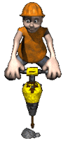

En este tema, construiremos un percutor, del estilo a los martillos neumáticos que habren agujeros en las calles de nuestras ciudades.

Este proyecto también lo vamos a dividir en 3 pasos. Primero haremos la parte de la maquinaria, después le
añadiremos un interruptor para su funcionamiento y por último le añadiremos una empuñadura para poder
sujetarla.
A continuación, mostraremos un ejemplo de construcción de un percutor base.
Empezaremos por crear la estructura donde sujetaremos el motor y la punta percutora.

Le añadimos la parte donde estará sujeta la punta percutora

Ahora colocamos la punta percutora y parte del engranaje de vaivén que moverá dicha punta
Terminamos de poner el engranaje de vaivén.
Y terminamos la estructura de la maquinaria.

Ya tendríamos terminada la maquinaría y por consiguiente, nuestra primera parte del proyecto. Podríamos enchufar el motor al bloque EV3 y hacer que funcione.

Ahora le añadiremos el interruptor y la empuñadura. Desmontamos parte de la estructura previamente montada.

Añadimos el interruptor y volvemos a montar la parte de la estructura desmontada y empezamos con la empuñadura.

Añadimos el resto de la empuñadura insertando previamente el cable del botón para que atraviese la empuñadura.

Una vez terminado el montaje, terminamos de poner los cables.

Nos debería de quedar un montaje de este estilo.

La programación para que nos funcione correctamente el botón de nuestro taladro podría ser el siguiente.

Nuestro proyecto terminado y programado funcionaría de la siguiente forma.